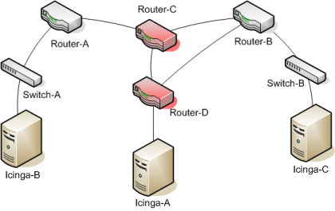

When Icinga receives passive host checks from remote sources (i.e other Icinga instances in distributed or failover setups), the host state reported by the remote source may not accurately reflect the state of the host from Icinga' view. As distributed and failover monitoring installations are fairly common, it is important to provide a mechanism for ensuring accurate host states between different instances of Icinga.
The image below shows a simplified view of a failover monitoring setup.

Icinga-A is the primary monitoring server, and is actively monitoring all switches and routers.
Icinga-B and Icinga-C are backup monitoring servers, and are receiving passive check results from Icinga-A
Both Router-C and Router-D have suffered failures and are offline.
What states are Router-C and Router-D currently in? The answer depends on which Icinga instance you ask.
Icinga-A sees Router-D as DOWN and Router-C as UNREACHABLE
Icinga-B should see Router-C as DOWN and Router-D as UNREACHABLE
Icinga-C should see both routers as being DOWN.
Each Icinga instance has a different view of the network. The backup monitoring servers should not blindly accept passive host states from the primary monitoring server, or they will have incorrect information on the current state of the network.
Without translating passive host check results from the primary monitoring server (Icinga-A), Icinga-C would see Router-D as UNREACHABLE, when it is really DOWN based on its viewpoint. Similarly, the DOWN/UNREACHABLE states (from the viewpoint of Icinga-A) for Router-C and Router-D should be flipped from the viewpoint of Icinga-B.
![[Note]](../images/note.png) |
Note |
|---|---|
|
There may be some situations where you do not want Icinga to translate DOWN/UNREACHABLE states from remote sources to their "correct" state from the viewpoint of the local Icinga instance. For example, in distributed monitoring environments you may want the central Icinga instance to know how distributed instances see their respective portions of the network. |
By default, Icinga will not automatically translate DOWN/UNREACHABLE states from passive check results. You will need to enable this feature if you need and want it.
The automatic translation of passive host check states is controlled by the translate_passive_host_checks variable. Enable it and Icinga will automatically translate DOWN and UNREACHABLE states from remote sources to their correct state for the local instance of Icinga.
© 1999-2009 Ethan Galstad, 2009-2017 Icinga Development Team, https://www.icinga.com